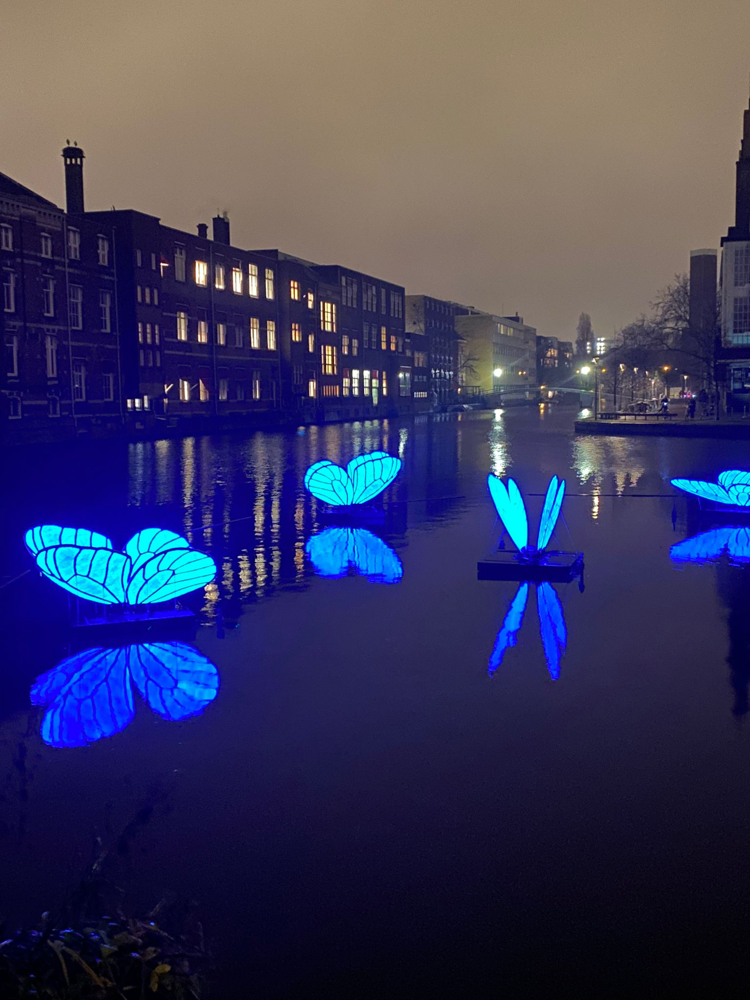

Art tour Amsterdam27/01/2022 By participating in this activity, we will take you along the most beautiful sights of Amsterdam. Get to know the history and culture on this 2.5-hour walking tour. Walk past the romantic canals and walk across Spui to get to the pearl of Amsterdam. With it’s entrance tucked away in a narrow side street, this very special courtyard is just waiting to be explored. On the way back to Dam Square you will see the river from which the city owes its name: the Amstel. The city tour ends at the National Monument, which was originally built to commemorate the victims of World War II, but is now a memorial to all those who lost their lives in war around the world. Explore |

Luxury canal tour27/01/2022 Discover the most spectacular sights of Amsterdam along the canals during a luxurious city tour with tourguide. Departure is from the Rijksmuseum. The tour lasts 1.5 hours. Precautions regarding Covid-19. Applicable security measures. You have to keep your distance in the vehicles. The number of visitors is limited to avoid crowds. All contact points are cleaned regularly. Requirements for participants. You must bring and wear your own mouth cap. Explore |

Walk tour highlights Amsterdam27/01/2022 Enjoy Amsterdam with a professional guide on this walking route. You'll learn about the all day life in the city, see some of the top attractions, and discover local hot spots. Explore |
Festival music27/01/2022 At this festival you can heat the latest Dutch-language hits. The artists included are: Maan, Snelle, Lil Kleine, Andre H Junior, Boef and of course the one and only SnolleBollekes. Explore |

Bike tour Amsterdam27/01/2022 If you want to discover Amsterdam in a real Dutch way, take a bike and discover the best locations during this tour. Explore |

Amsterdam Light Festival27/01/2022 Discover Amsterdam at night during the Light festival. This year is the anniversary of 10 years of existence. The theme is therefore Celebrate Light. The artworks on display are: Light a Wish, Run Beyond, Butterfly Effect, SPIDER, Bridge of the Rainbow. Explore |